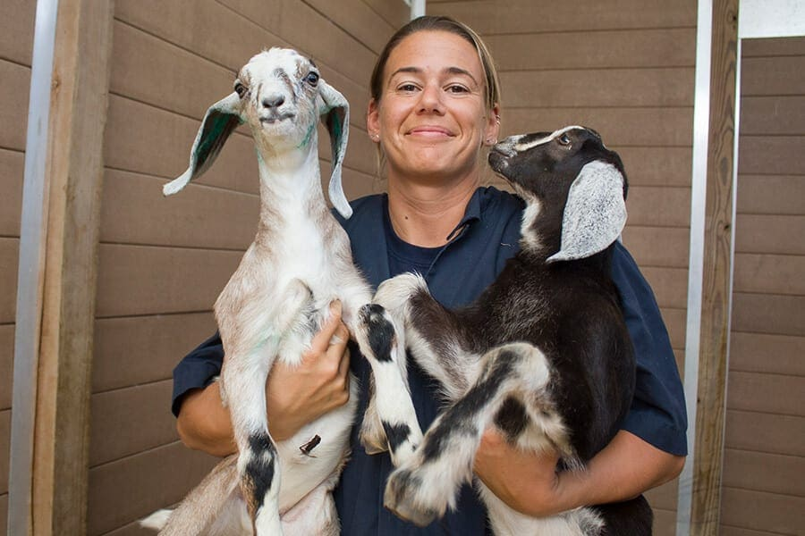

Goat, any ruminant and hollow-horned mammal belonging to the genus Capra. Related to the sheep, the goat is lighter of build, has horns that arch backward, a short tail, and straighter hair. Male goats, called bucks or billys, usually have a beard. Females are called does or nannys, and immature goats are called kids. Wild goats include the ibex and markhor.
